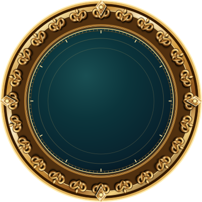

KGDBGPS çalışmazsa koordinatı elle gir
⏰ Saat dilimi (gemi saati için önemli)
Gemi saati, telefon saat dilimi ve boylama göre otomatik deniz saati farklı olabilir. Geminin kullandığı saat için UTC farkını ayarla. Bu ayar namaz vakitlerinin gösterimini de değiştirir.
Anlam özeti · kaynakları kontrol edebilirsiniz
Google Haritalar uygulaması veya Google Maps API anahtarı gerekmez; Google Play Hizmetleri üzerinden Wi-Fi/ağ destekli konum alınmaya çalışılır. Gemi uydu interneti kendi başına gerçek gemi koordinatını vermez. Açık denizde ağ konumu yoksa GPS veya manuel koordinat gereklidir. Vakitler seçilen saat dilimine ve doğrulanmış koordinatlara göre internetsiz yaklaşık astronomik hesapla belirlenir; resmî veya bölgesel takvimlerle belirgin dakika farkları olabilir. Gemide ilerledikçe konum yenilenir. Kıble pusulası için telefonu mümkünse düz tut; metal yüzeyler, gemi donanımı ve manyetik sapma yönü etkileyebilir. GPS alınamazsa önceki kayıt güncel konum sayılmaz.